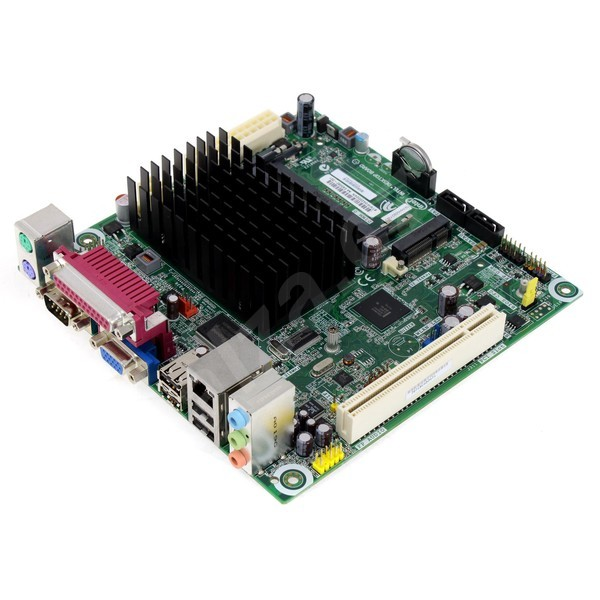
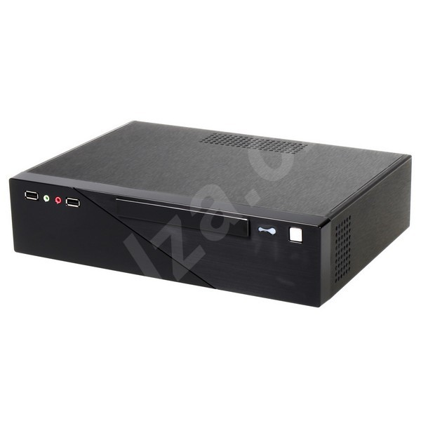
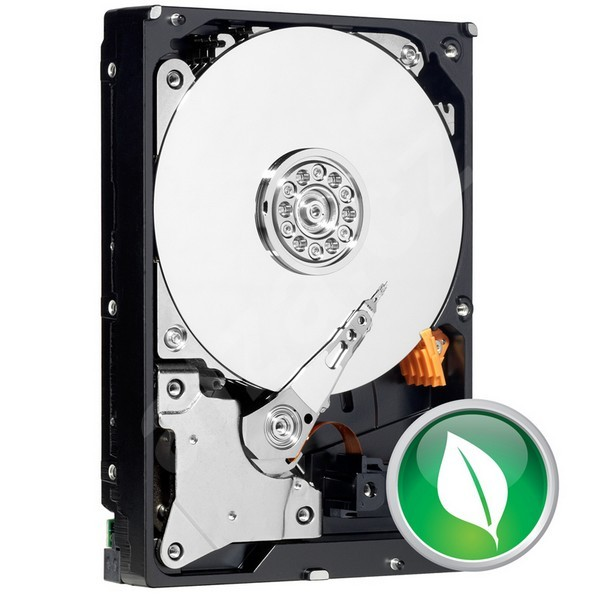

Železo na kterém to běží
HW serveru je postaven na mini ITX desce Mount Washington se 4GB paměti a 1TB diskem, hozené do mini ITX case se 150W zdrojem. Krom toho je tam ještě 250GB HD z mého laptopu (2,5") zařazený do SW raidu 1, takže je momentálně k dispozici jen 250GB. Zatím to stačí a třeba jednou nějaký 1TB hardisk seženu.
V case je pozice jen na jeden HD. Je tam ale pozice i na slim DVD mechaniku, kam jsem dal ten druhý - vejde se tam tenký laptopový disk 2,5". Pokud by se trochu předělala nosná přepážka, vešel by se tam možná i druhý 3,5" disk.
Základní deska:
INTEL D525MW Mount Washington 
Case:
CFI A6819 Slim mini ITX černý, 1x 5.25", 1x 3.5" HDD, 2x USB2.0, HD audio, 150W zdroj 
Harddisk:
WESTERN DIGITAL Caviar Green 1000GB, SATA II, 64MB cache, IntelliPower, 8.9ms, WD10EARS 
Paměť:
4GB (KIT 2x2GB) SO-DIMM DDR3 1333MHz CL9 PATRIOT Signature Line
Recent Entries
- Recent Entries1 01 Des 06
- Recent Entries2 01 Des 06
- Recent Entries3 01 Des 06
- Recent Entries4 01 Des 06
- Recent Entries5 01 Des 06